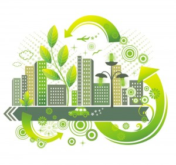

Living a Sustainably Lifestyle
Sustainable living is a lifestyle that tries to reduce a individuals use of natural resoucres. Individuals often attempt to reduce their carbon footprint by changing their method of transportation, diet, and energy consumption. 
The planet only as finite amount of resources, and only withsand a certain amount of greenhouse gases. Life on earth as we know it is dependent on keeping the earth within certain parameters. Humans and nature are currently starting to face the consequences of increased consumption.
The largest contributor of environmental degradation is the use of resources at a sustaianble rate. Most of the planet economic growth can be put down to the over explotation of resources. However, the world's natural resources are becoming increasingly scares, so the constraints to economic growth are being highlighted.
Currently, significant increases in population continues, in additon to economic growth. The current societal model, suggests that economic growth is need for reducing poverty. However, for future survival we need to find a way on, of using resources sustainably to avoid enviromental degradation whilst meeting the needs of future generations.